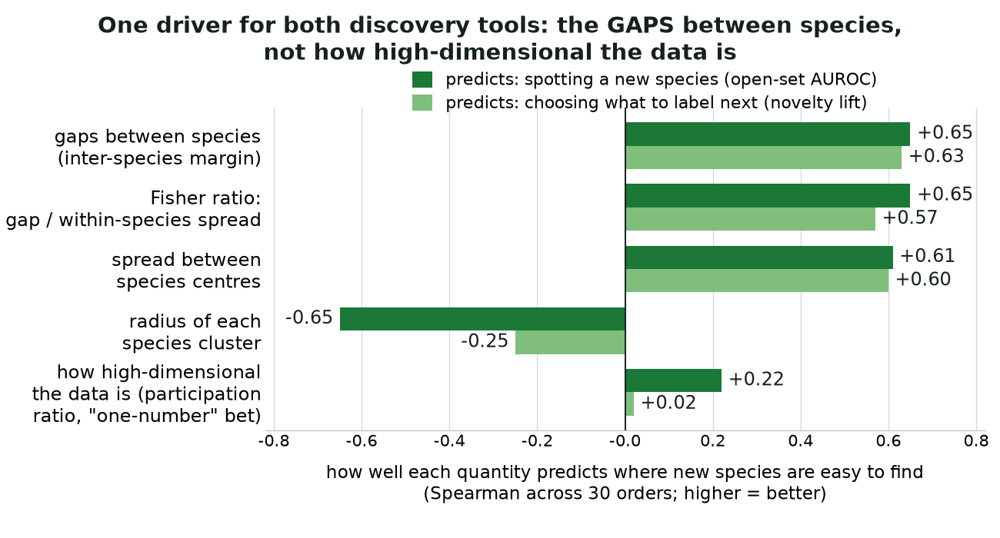
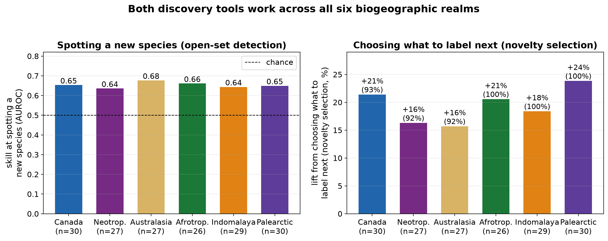
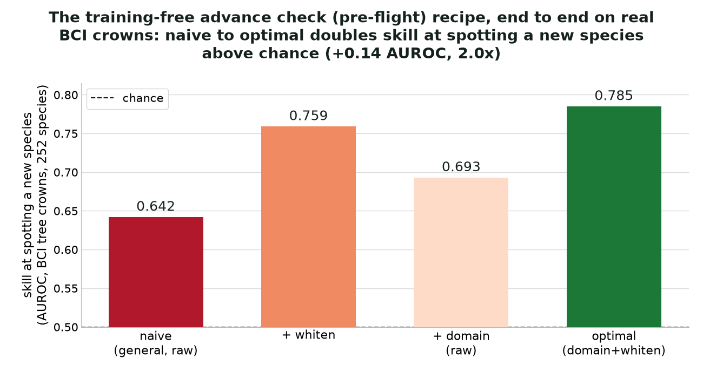

Finding Life, Efficiently
A training-free pre-flight for species discovery:
the geometry, the engine, the deployment.
the geometry, the engine, the deployment.
Wietze Suijker
labelfirst · speciesfirst
Two shortfalls, one question: where does attention pay off?
Linnean (what exists)
- most species still unnamed
- which observation to label next?
Wallacean (where they are)
- most named species barely mapped
- where to observe next?
The binding constraint is expert attention. A
training-free pre-flight, computed from a small labelled reference set in a frozen
embedding, tests a priori where targeting beats random, before a label or field trip is spent.
Feature space · the which-to-label axisTwo decisions, one ruler: the gaps between species
Species sit far apartwide gaps
Species overlapnarrow gaps
Task 1Spotting a
new species
new species
✓ newcomer stands out
✗ newcomer hides among knowns
Task 2Choosing what
to label
to label
✓ 3 picks → 3 species
✗ 3 picks → same crowd
★ new species ·
dashed = distance to nearest known · ringed = the budget's picks.
Wide gaps make both jobs easy; overlap breaks both at once.
The ruler: gaps between species, not cloud size

The pre-flight is the inter-species margin:
how cleanly species clusters separate. It governs both feature-space tools (Spearman
+0.65 spotting, +0.63 choosing). Effective dimension, how high-dimensional the cloud is,
governs neither (+0.22, +0.02). The obvious objection is that separability is just accuracy in
disguise; it survives the control. Net of closed-set accuracy the margin keeps ρ=+0.31
(934 clade cells, FWER p<1e−20): real signal, not a restatement of accuracy.
What "detectable" means: two bell curves and the gap between them
Give every observation a novelty score. Known species and
novel ones each form a bell curve. Detection quality (AUROC = the chance a random novel
outscores a random known) depends on one thing: how far the bells sit apart in
their own standard deviations, the separation d′. The identity
AUROC = Φ(d′/√2) converts that gap straight into accuracy, exact, no fitting.
That is the mechanism, not the evidence. The evidence is the forecast: d′ measured on
known species predicts detection of ones held out or absent from training (next slide),
and could have failed.
It transfers off the data it was measured on

The margin forecasts per-order difficulty on a continent it was never measured on
(+0.59, positive in all six folds), and on species provably absent from the model's training set
(the forecast holds at pooled ρ 0.95–0.99; the identity fits it to Pearson 0.995–0.998, across five backbones and all six realms).
Backbone-robust and resolution-invariant (order/family/genus +0.65/+0.61/+0.62).
How close to real discovery? A graded boundary
0.92
vs the whole known fauna
116 out-of-training species
0.65
with a congener present
a close relative in the reference set
0.59
no congener: whole genus held out
a genuinely new lineage
The portable claim is graded-distance
detectability. Novel lineages with no close relative are the hard case, and I say so: the standard
open-set headline is partly carried by near relatives. The margin forecasts the difficulty at every rung.
So the pre-flight is two-dimensional

Feature-novelty wins species discovery (+20%) and barely moves coverage (+0.9%);
geographic coverage wins places (+77%) and barely moves species (+8%). A double dissociation:
each axis is a specialist, neither readable off the other. A complete pre-flight
needs both.
From geometry to softwareTwo layers, one job
labelfirst (the engine)
- which photo to label next
- the separability pre-flight: will smart picking beat random?
- 16 interchangeable strategies behind one call
speciesfirst (the BCI deployment)
labelfirst · the engineA numpy-core, provenance-first selection library
Selection and audit run with zero deep-learning dependencies; torch and pyarrow load lazily, only when you embed or read parquet.
- Columnar embeddings I/O.
key, embeddingparquet, read straight from the Arrow value buffer (skips the per-row Python list that triples peak RAM); every row L2-normalized at load, soX @ Xᵀis cosine. - 16 strategies behind one Protocol.
select(X, labeled, k)dispatched from a registry; default CoreSet (greedy k-center, cosine). Oneselect_batchescall gates, selects, then KMeans-batches for the labeller. - The pre-flight is a metric, not a model. kNN leave-one-out separability → GO / borderline / skip; the open-set arm computes AUROC = Φ(d′/√2) from LOO centroid scores, then reports the realized FPR/TPR as a Gaussian-fit honesty check.
- Every run is auditable. a
RunRecordstamps strategy, seed, embedding SHA-256, library and Python versions, timestamp; loaders fail loudly on schema drift. - A pre-registered harness. frozen spec, Holm–Bonferroni FWER, a Wilcoxon power-floor that refuses a PASS when seeds can't clear 1/2ⁿ, and a synthetic imbalance self-test where balanced data must show no win.
speciesfirst · the BCI deploymentA governed, conformal curation loop
An auditable loop over real crowns, embed → conformal-tier → Labelbox → WCVP handoff, on a commit-pinned labelfirst for reproducible builds.
- Conformal tiering with a genus fallback. cross-conformal (K=5) prediction sets split crowns into low-priority (small set, kept as a suggestion, no expert) vs flag-for-review; species→genus→defer, each level held to 1−α coverage; empty sets (out-of-support novelty) rank first.
- Two-tier trust. only verified (“Done”) labels grow ground truth; in-review labels steer selection but stay out of the pool.
merge_labelsrefuses labels for crowns with no embedding and never overwrites. - Labelbox via labelpull. export + flatten; batch = cluster, and clusters below a cohesion floor are dropped, recorded in the push plan, never silently.
- WCVP handoff to Pl@ntNet. Kew's checklist fixes synonym/rank noise (33% of BCI labels), out-of-range mislabels, and rare-but-weed; deterministic JSON. Crown geometry read from GeoPackages with stdlib
sqlite3+struct— zero geo deps. - Leakage-first evaluation. a label-free backtest where the directed selector must beat every random seed, plus a genus-holdout split so a species has no congener prototype to leak from.
The recipe on real crowns roughly doubles skill

On 3 280 BCI crowns: the raw margin picks the best embedding without running the
experiment; whitening the survey batch then adds +0.09–0.12 AUROC. End to end, detection skill above chance
roughly doubles (0.642 → 0.785). But whitening helps the detector and
hurts selection, so: whiten for detection, keep raw for selection.
speciesfirst · the biggest leverTeach the embedding your canopy, then re-select
+54%
more rare species for the same expert budget
79 → 122 of 157 rare species · 520-label budget, paired over 16 seeds
~90%
of that gain from a single retrain mid-flight
retrain at ≈160 labels (+49%); no chicken-and-egg, no waiting to finish
0
rare species seen in fine-tuning
train on common only, so the rare-tail lift is honest transfer
Pl@ntNet's embedding learned ground-level leaves and flowers; our crowns are tops from above.
Cross-entropy on the last few blocks of the frozen backbone, re-embed everything, keep selecting on the sharper space.
It sharpens what is familiar so the unfamiliar stands out; it does not teach a lineage it never saw. The retrain handoff to Pl@ntNet is in flight.
Why the engine travelsOne pre-flight, every modality a biodiversity lab monitors
Runs today (measured)
- Tree crowns: deployed on real BCI drone crowns; retrain handoff in flight
- Birdsong, insects, aerial: one chance-anchored line, AUROC ≈ 0.32·sep + 0.49 (R²=0.96), across six data types
Same shape, one line to test (candidate)
- UAV tree ID, insect camera-traps, remote-sensing backbone selection
- same expert bottleneck, same frozen-embedding geometry; the modality is proven, the dataset is a manifest away
The binding constraint is the same everywhere: 1–20 min a photo, more pictures than botanists.
The detection pre-flight is modality-general; the label-selection win is measured on imagery, not yet on audio.
From correlation to cause: a ladder, not a leap
- Done: a leakage-free backtest where high-priority cells out-discover low-priority ones at equal effort, with a tripwire that fails the build if a held-out crown ever reaches a picker.
- Next: a candidate-controlled botanist-queue trial, where the labeller acts on exactly what we serve, so there is no compliance gap and no third-party infrastructure.
- Upside: a randomized bioblitz field trial, once field logistics and approvals align.
Thank you
Finding life, efficiently: predict where discovery pays off,
before you pay for it.
the geometry — a training-free margin, a closed-form detector, two decoupled axes
the engine (labelfirst) · the deployment (speciesfirst, on BCI)
Wietze Suijker · wietze.suijker@mila.quebec
Every number reproduces from committed scripts · traitlab/labelfirst, traitlab/speciesfirst
the engine (labelfirst) · the deployment (speciesfirst, on BCI)
Wietze Suijker · wietze.suijker@mila.quebec
Every number reproduces from committed scripts · traitlab/labelfirst, traitlab/speciesfirst